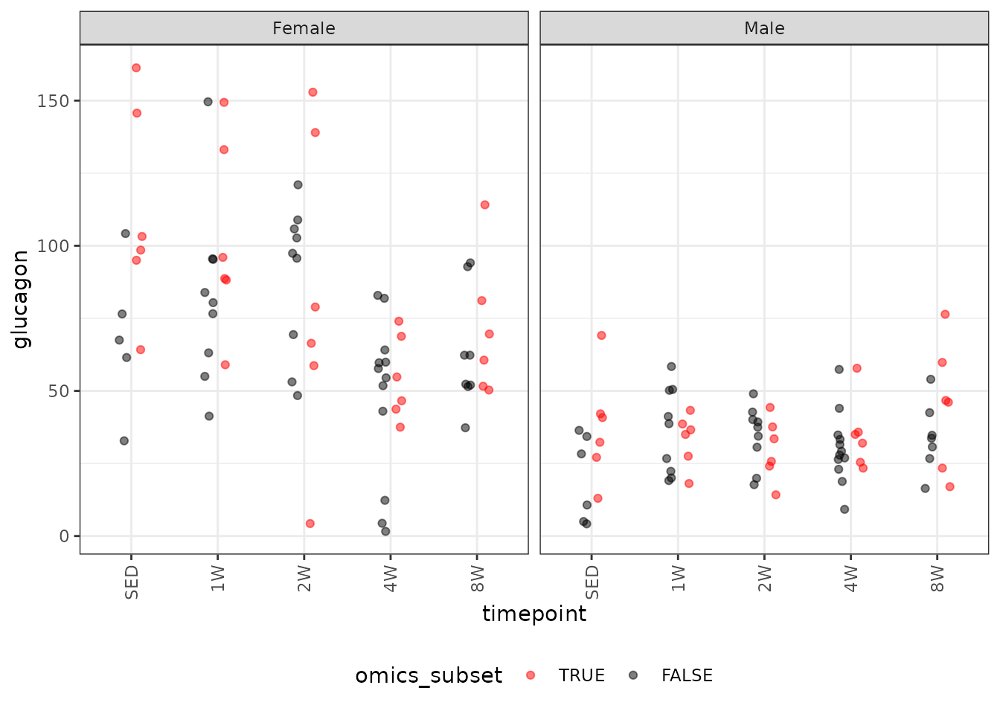
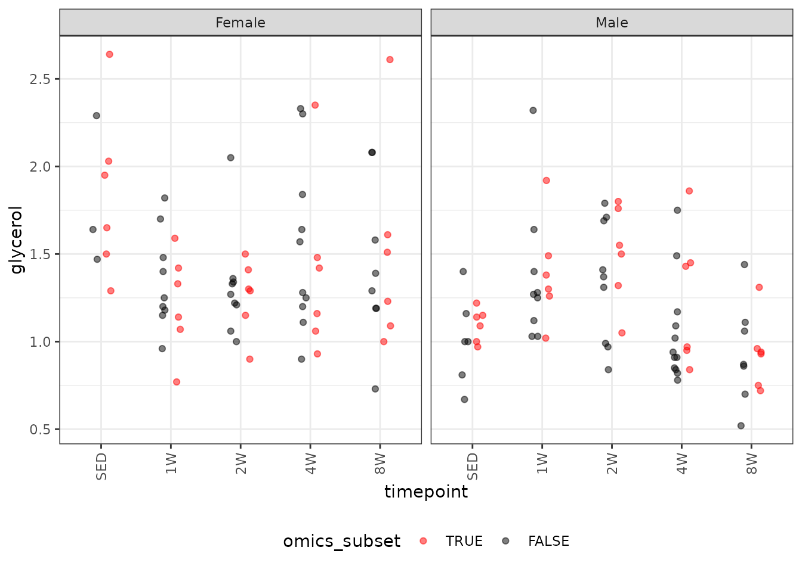
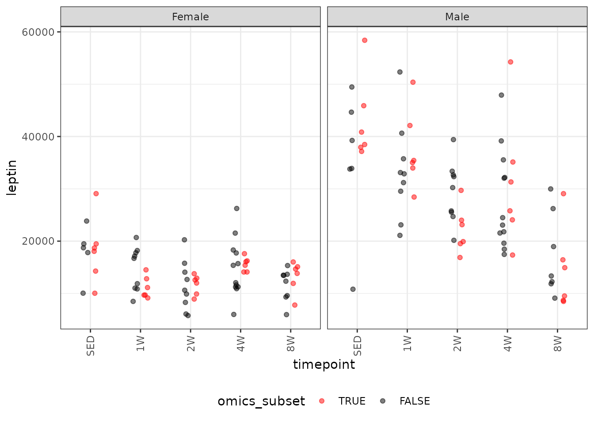
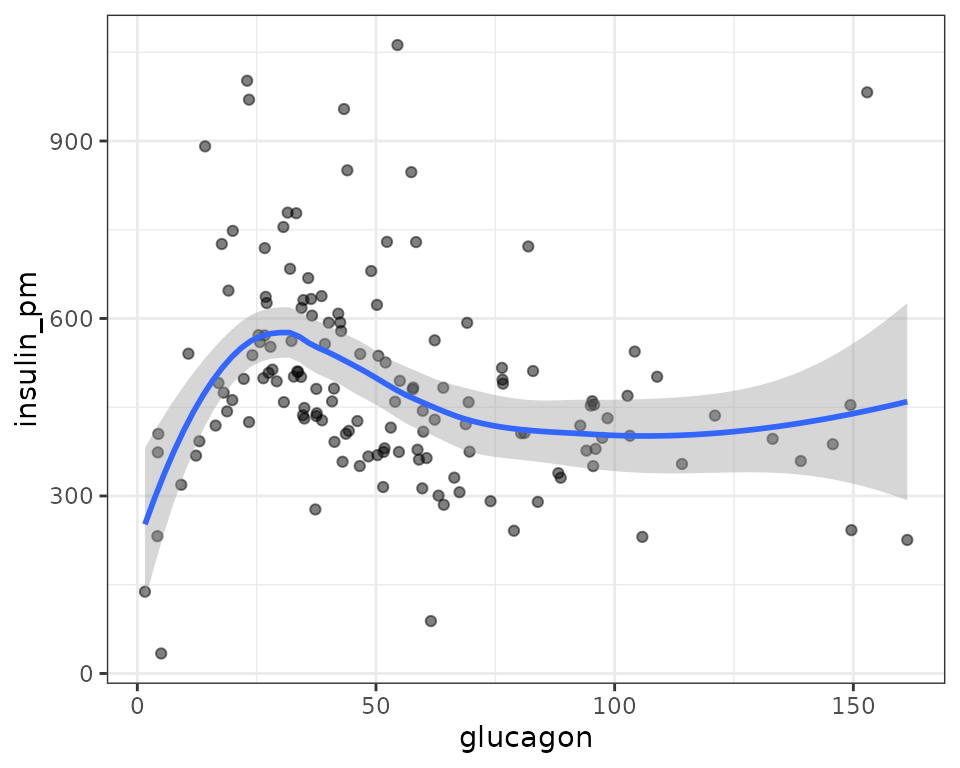

Statistical analyses of plasma clinical analytes
Tyler Sagendorf
05 March, 2024
Source:vignettes/ANALYTES_STATS.Rmd
ANALYTES_STATS.Rmd
# Required packages
library(MotrpacRatTraining6moWATData)
library(ggplot2)
library(dplyr)
library(emmeans)
library(tibble)
library(tidyr)
library(purrr)
library(latex2exp)
theme_set(theme_bw()) # base plot theme
# Generate all regression diagnostic plots
plot_lm <- function(x) {
par(mfrow = c(2, 3))
for (i in 1:6)
plot(x, which = i)
par(mfrow = c(1, 1))
}Regression Models
Since clinical analytes are strictly positive, we will check the mean–variance relationship with code from Dunn and Smyth[1] (pg. 429–430) and fit an appropriate log-link GLM. This allows us to back-transform the means without introducing bias, unlike when the response is transformed. Also, the log-link allows us to test ratios between means, rather than their absolute differences.
If there are obvious problems with the model diagnostic plots, or the mean–variance relationship does not correspond to an exponential family distribution, we will include reciprocal group variances as weights in a log-link Gaussian GLM. Finally, we will remove insignificant predictors to achieve model parsimony based on ANOVA F-tests.
Glucagon
# Plot points
ggplot(ANALYTES, aes(x = timepoint, y = glucagon,
color = omics_subset, group = omics_subset)) +
geom_point(position = position_jitterdodge(jitter.width = 0.1,
dodge.width = 0.4,
jitter.height = 0),
na.rm = TRUE, alpha = 0.5) +
facet_grid(~ sex) +
scale_color_manual(values = c("red", "black"),
breaks = c(TRUE, FALSE)) +
theme(axis.text.x = element_text(angle = 90, hjust = 1, vjust = 0.5),
legend.position = "bottom",
legend.direction = "horizontal")
We will check the mean-variance relationship.
mv <- filter(ANALYTES, omics_subset) %>%
group_by(sex, timepoint) %>%
summarise(mn = mean(glucagon, na.rm = TRUE),
vr = var(glucagon, na.rm = TRUE))
fit.mv <- lm(log(vr) ~ log(mn), data = mv)
coef(fit.mv)
#> (Intercept) log(mn)
#> -2.18263 2.05315
plot(log(vr) ~ log(mn), data = mv, las = 1, pch = 19,
xlab = "log(group means)", ylab = "log(group variances)")
abline(coef(fit.mv), lwd = 2)The slope suggests a variance function approximately of the form \(V(\mu) = \mu^{2}\), so a gamma distribution seems appropriate.
fit.glucagon <- glm(glucagon ~ sex * timepoint,
family = Gamma("log"),
data = filter(ANALYTES, omics_subset))
plot_lm(fit.glucagon)Observation 6 is outlying in the QQ-plot, and it has the largest Cook’s distance. While there is no biological justification for removal, doing so will bring the mean of the female 2W group closer to the mean of the female SED group, so the results will be more conservative. Therefore, we will remove this observation and report it in the final results table.
fit.glucagon.1 <- update(fit.glucagon, subset = -6)
plot_lm(fit.glucagon.1)The diagnostic plots look fine. We will try to simplify the model.
fit.glucagon <- fit.glucagon.1
anova(fit.glucagon, test = "F")
#> Analysis of Deviance Table
#>
#> Model: Gamma, link: log
#>
#> Response: glucagon
#>
#> Terms added sequentially (first to last)
#>
#>
#> Df Deviance Resid. Df Resid. Dev F Pr(>F)
#> NULL 58 21.1496
#> sex 1 11.2187 57 9.9309 80.2205 6.843e-12 ***
#> timepoint 4 0.9099 53 9.0210 1.6266 0.18251
#> sex:timepoint 4 1.6847 49 7.3363 3.0117 0.02673 *
#> ---
#> Signif. codes: 0 '***' 0.001 '**' 0.01 '*' 0.05 '.' 0.1 ' ' 1The interaction is significant, so we will not drop any terms.
summary(fit.glucagon)
#>
#> Call:
#> glm(formula = glucagon ~ sex * timepoint, family = Gamma("log"),
#> data = filter(ANALYTES, omics_subset), subset = -6)
#>
#> Coefficients:
#> Estimate Std. Error t value Pr(>|t|)
#> (Intercept) 4.71238 0.15267 30.867 < 2e-16 ***
#> sexMale -1.09071 0.21591 -5.052 6.48e-06 ***
#> timepoint1W -0.08349 0.21591 -0.387 0.70065
#> timepoint2W -0.11544 0.22645 -0.510 0.61248
#> timepoint4W -0.71908 0.21591 -3.331 0.00165 **
#> timepoint8W -0.44665 0.21591 -2.069 0.04387 *
#> sexMale:timepoint1W -0.03613 0.30534 -0.118 0.90629
#> sexMale:timepoint2W -0.10837 0.31288 -0.346 0.73055
#> sexMale:timepoint4W 0.64990 0.30534 2.128 0.03835 *
#> sexMale:timepoint8W 0.62942 0.30534 2.061 0.04459 *
#> ---
#> Signif. codes: 0 '***' 0.001 '**' 0.01 '*' 0.05 '.' 0.1 ' ' 1
#>
#> (Dispersion parameter for Gamma family taken to be 0.139848)
#>
#> Null deviance: 21.1496 on 58 degrees of freedom
#> Residual deviance: 7.3363 on 49 degrees of freedom
#> AIC: 532.04
#>
#> Number of Fisher Scoring iterations: 4Glucose
# Plot points
ggplot(ANALYTES, aes(x = timepoint, y = glucose,
color = omics_subset, group = omics_subset)) +
geom_point(position = position_jitterdodge(jitter.width = 0.1,
dodge.width = 0.4,
jitter.height = 0),
na.rm = TRUE, alpha = 0.5) +
facet_grid(~ sex) +
scale_color_manual(values = c("red", "black"),
breaks = c(TRUE, FALSE)) +
theme(axis.text.x = element_text(angle = 90, hjust = 1, vjust = 0.5),
legend.position = "bottom",
legend.direction = "horizontal")We will check the mean-variance relationship.
mv <- filter(ANALYTES, omics_subset) %>%
group_by(sex, timepoint) %>%
summarise(mn = mean(glucose, na.rm = TRUE),
vr = var(glucose, na.rm = TRUE))
fit.mv <- lm(log(vr) ~ log(mn), data = mv)
coef(fit.mv)
#> (Intercept) log(mn)
#> 21.74539 -3.37406
plot(log(vr) ~ log(mn), data = mv, las = 1, pch = 19,
xlab = "log(group means)", ylab = "log(group variances)")
abline(coef(fit.mv), lwd = 2)The slope suggests a variance function approximately of the form \(V(\mu) = \mu^{-3}\), which does not correspond to any of the named distributions. We will instead incorporate reciprocal group variances as weights in a log-link Gaussian GLM.
wt.glucose <- filter(ANALYTES, omics_subset) %>%
group_by(sex, timepoint) %>%
mutate(1 / var(glucose, na.rm = TRUE)) %>%
pull(-1)
fit.glucose <- glm(glucose ~ sex * timepoint,
family = gaussian("log"),
weights = wt.glucose,
data = filter(ANALYTES, omics_subset))
plot_lm(fit.glucose)The right tail of the QQ-plot is lighter than expected, which means that p-values will be more conservative when we perform comparisons. We will try to simplify the model to see if that fixes things.
anova(fit.glucose, test = "F")
#> Analysis of Deviance Table
#>
#> Model: gaussian, link: log
#>
#> Response: glucose
#>
#> Terms added sequentially (first to last)
#>
#>
#> Df Deviance Resid. Df Resid. Dev F Pr(>F)
#> NULL 59 148.771
#> sex 1 57.449 58 91.322 57.4488 7.472e-10 ***
#> timepoint 4 18.338 54 72.984 4.5845 0.0031235 **
#> sex:timepoint 4 22.984 50 50.000 5.7459 0.0006945 ***
#> ---
#> Signif. codes: 0 '***' 0.001 '**' 0.01 '*' 0.05 '.' 0.1 ' ' 1All terms are significant, so we will not modify the model.
summary(fit.glucose)
#>
#> Call:
#> glm(formula = glucose ~ sex * timepoint, family = gaussian("log"),
#> data = filter(ANALYTES, omics_subset), weights = wt.glucose)
#>
#> Coefficients:
#> Estimate Std. Error t value Pr(>|t|)
#> (Intercept) 4.93567 0.05213 94.683 < 2e-16 ***
#> sexMale 0.24705 0.05676 4.352 6.66e-05 ***
#> timepoint1W 0.08711 0.06379 1.366 0.17817
#> timepoint2W 0.01545 0.05828 0.265 0.79205
#> timepoint4W 0.17431 0.05431 3.209 0.00232 **
#> timepoint8W 0.16318 0.05597 2.915 0.00531 **
#> sexMale:timepoint1W -0.10600 0.07065 -1.500 0.13982
#> sexMale:timepoint2W -0.03053 0.06570 -0.465 0.64420
#> sexMale:timepoint4W -0.19224 0.06625 -2.902 0.00550 **
#> sexMale:timepoint8W -0.18493 0.06251 -2.959 0.00471 **
#> ---
#> Signif. codes: 0 '***' 0.001 '**' 0.01 '*' 0.05 '.' 0.1 ' ' 1
#>
#> (Dispersion parameter for gaussian family taken to be 1)
#>
#> Null deviance: 148.77 on 59 degrees of freedom
#> Residual deviance: 50.00 on 50 degrees of freedom
#> AIC: 454.44
#>
#> Number of Fisher Scoring iterations: 4Glycerol
# Plot points
ggplot(ANALYTES, aes(x = timepoint, y = glycerol,
color = omics_subset, group = omics_subset)) +
geom_point(position = position_jitterdodge(jitter.width = 0.1,
dodge.width = 0.4,
jitter.height = 0),
na.rm = TRUE, alpha = 0.5) +
facet_grid(~ sex) +
scale_color_manual(values = c("red", "black"),
breaks = c(TRUE, FALSE)) +
theme(axis.text.x = element_text(angle = 90, hjust = 1, vjust = 0.5),
legend.position = "bottom",
legend.direction = "horizontal")
There are outlying observations in the SED, 4W, and 8W female groups. We will check the mean-variance relationship.
mv <- filter(ANALYTES, omics_subset) %>%
group_by(sex, timepoint) %>%
summarise(mn = mean(glycerol, na.rm = TRUE),
vr = var(glycerol, na.rm = TRUE))
fit.mv <- lm(log(vr) ~ log(mn), data = mv)
coef(fit.mv)
#> (Intercept) log(mn)
#> -3.473325 3.847040
plot(log(vr) ~ log(mn), data = mv, las = 1, pch = 19,
xlab = "log(group means)", ylab = "log(group variances)")
abline(coef(fit.mv), lwd = 2)The slope suggests a variance function approximately of the form \(V(\mu) = \mu^{3.85}\), which does not correspond to any of the named distributions. We will instead incorporate reciprocal group variances as weights in a log-link Gaussian GLM.
wt.glycerol <- filter(ANALYTES, omics_subset) %>%
group_by(sex, timepoint) %>%
mutate(1 / var(glycerol, na.rm = TRUE)) %>%
pull(-1)
fit.glycerol <- glm(glycerol ~ sex * timepoint,
family = gaussian("log"),
weights = wt.glycerol,
data = filter(ANALYTES, omics_subset))
plot_lm(fit.glycerol)The diagnostic plots look mostly fine. We will try to simplify the model.
anova(fit.glycerol, test = "F")
#> Analysis of Deviance Table
#>
#> Model: gaussian, link: log
#>
#> Response: glycerol
#>
#> Terms added sequentially (first to last)
#>
#>
#> Df Deviance Resid. Df Resid. Dev F Pr(>F)
#> NULL 59 89.199
#> sex 1 8.6943 58 80.505 8.6943 0.0048426 **
#> timepoint 4 7.6795 54 72.826 1.9199 0.1216351
#> sex:timepoint 4 22.8255 50 50.000 5.7064 0.0007301 ***
#> ---
#> Signif. codes: 0 '***' 0.001 '**' 0.01 '*' 0.05 '.' 0.1 ' ' 1The interaction is significant, so we will not remove any terms.
summary(fit.glycerol)
#>
#> Call:
#> glm(formula = glycerol ~ sex * timepoint, family = gaussian("log"),
#> data = filter(ANALYTES, omics_subset), weights = wt.glycerol)
#>
#> Coefficients:
#> Estimate Std. Error t value Pr(>|t|)
#> (Intercept) 0.61158 0.10586 5.777 4.85e-07 ***
#> sexMale -0.52082 0.11166 -4.665 2.34e-05 ***
#> timepoint1W -0.41272 0.14360 -2.874 0.005935 **
#> timepoint2W -0.38179 0.12621 -3.025 0.003918 **
#> timepoint4W -0.27510 0.18268 -1.506 0.138383
#> timepoint8W -0.20057 0.19138 -1.048 0.299661
#> sexMale:timepoint1W 0.65486 0.17215 3.804 0.000389 ***
#> sexMale:timepoint2W 0.69427 0.15187 4.571 3.21e-05 ***
#> sexMale:timepoint4W 0.40749 0.22648 1.799 0.078022 .
#> sexMale:timepoint8W 0.04261 0.21527 0.198 0.843907
#> ---
#> Signif. codes: 0 '***' 0.001 '**' 0.01 '*' 0.05 '.' 0.1 ' ' 1
#>
#> (Dispersion parameter for gaussian family taken to be 1)
#>
#> Null deviance: 89.199 on 59 degrees of freedom
#> Residual deviance: 50.000 on 50 degrees of freedom
#> AIC: 36.884
#>
#> Number of Fisher Scoring iterations: 5Insulin
It does not matter which units we use for insulin. It does not affect the model fit or the ratios when we set up the comparisons later.
# Plot points
ggplot(ANALYTES, aes(x = timepoint, y = insulin_pm,
color = omics_subset, group = omics_subset)) +
geom_point(position = position_jitterdodge(jitter.width = 0.1,
dodge.width = 0.4,
jitter.height = 0),
na.rm = TRUE, alpha = 0.5) +
facet_grid(~ sex) +
scale_color_manual(values = c("red", "black"),
breaks = c(TRUE, FALSE)) +
theme(axis.text.x = element_text(angle = 90, hjust = 1, vjust = 0.5),
legend.position = "bottom",
legend.direction = "horizontal")There are outlying values in the 2W female and 1W, 2W, and 4W male groups. We will check the mean-variance relationship, though the male observations are not outlying when compared to the full cohort. Additionally, we do not observe differences between the timepoints, though there may be sex differences.
mv <- filter(ANALYTES, omics_subset) %>%
group_by(sex, timepoint) %>%
summarise(mn = mean(insulin_pm, na.rm = TRUE),
vr = var(insulin_pm, na.rm = TRUE))
fit.mv <- lm(log(vr) ~ log(mn), data = mv)
coef(fit.mv)
#> (Intercept) log(mn)
#> -22.630533 5.147836
plot(log(vr) ~ log(mn), data = mv, las = 1, pch = 19,
xlab = "log(group means)", ylab = "log(group variances)")
abline(coef(fit.mv), lwd = 2)The slope is close to 5, which doesn’t correspond to any of the named distributions. We will try reciprocal group variance weights with a log-link Gaussian GLM that has only sex as a predictor.
wt.ins <- filter(ANALYTES, omics_subset) %>%
group_by(sex, timepoint) %>%
mutate(1 / var(insulin_pm, na.rm = TRUE)) %>%
pull(-1)
fit.ins <- glm(insulin_pm ~ sex,
family = gaussian("log"),
weights = wt.ins,
data = filter(ANALYTES, omics_subset))
plot_lm(fit.ins)The diagnostic plots look fine.
summary(fit.ins)
#>
#> Call:
#> glm(formula = insulin_pm ~ sex, family = gaussian("log"), data = filter(ANALYTES,
#> omics_subset), weights = wt.ins)
#>
#> Coefficients:
#> Estimate Std. Error t value Pr(>|t|)
#> (Intercept) 5.92661 0.01722 344.164 < 2e-16 ***
#> sexMale 0.29555 0.03706 7.974 6.77e-11 ***
#> ---
#> Signif. codes: 0 '***' 0.001 '**' 0.01 '*' 0.05 '.' 0.1 ' ' 1
#>
#> (Dispersion parameter for gaussian family taken to be 1.017982)
#>
#> Null deviance: 112.733 on 59 degrees of freedom
#> Residual deviance: 59.043 on 58 degrees of freedom
#> AIC: 715.29
#>
#> Number of Fisher Scoring iterations: 4Leptin
# Plot points
ggplot(ANALYTES, aes(x = timepoint, y = leptin,
color = omics_subset, group = omics_subset)) +
geom_point(position = position_jitterdodge(jitter.width = 0.1,
dodge.width = 0.4,
jitter.height = 0),
na.rm = TRUE, alpha = 0.5) +
facet_grid(~ sex) +
scale_color_manual(values = c("red", "black"),
breaks = c(TRUE, FALSE)) +
theme(axis.text.x = element_text(angle = 90, hjust = 1, vjust = 0.5),
legend.position = "bottom",
legend.direction = "horizontal")
We will check the mean-variance relationship.
mv <- filter(ANALYTES, omics_subset) %>%
group_by(sex, timepoint) %>%
summarise(mn = mean(leptin, na.rm = TRUE),
vr = var(leptin, na.rm = TRUE))
fit.mv <- lm(log(vr) ~ log(mn), data = mv)
coef(fit.mv)
#> (Intercept) log(mn)
#> -5.289574 2.235023
plot(log(vr) ~ log(mn), data = mv, las = 1, pch = 19,
xlab = "log(group means)", ylab = "log(group variances)")
abline(coef(fit.mv), lwd = 2)The slope is just above 2, so a gamma GLM may be appropriate.
fit.lep <- glm(leptin ~ sex * timepoint,
family = Gamma("log"),
data = filter(ANALYTES, omics_subset))
plot_lm(fit.lep)Observations are deviating from the right tail of the QQ-plot. We will fit a log-link Gaussian GLM with reciprocal group variances as weights.
wt.lep <- filter(ANALYTES, omics_subset) %>%
group_by(sex, timepoint) %>%
mutate(1 / var(leptin, na.rm = TRUE)) %>%
pull(-1)
fit.lep <- glm(leptin ~ sex * timepoint,
family = gaussian("log"),
weights = wt.lep,
data = filter(ANALYTES, omics_subset))
plot_lm(fit.lep)The diagnostic plots appear mostly fine, so we will try to simplify the model.
anova(fit.lep, test = "F")
#> Analysis of Deviance Table
#>
#> Model: gaussian, link: log
#>
#> Response: leptin
#>
#> Terms added sequentially (first to last)
#>
#>
#> Df Deviance Resid. Df Resid. Dev F Pr(>F)
#> NULL 59 242.039
#> sex 1 103.955 58 138.084 103.9548 8.338e-14 ***
#> timepoint 4 61.061 54 77.023 15.2651 3.191e-08 ***
#> sex:timepoint 4 27.023 50 50.000 6.7558 0.0001989 ***
#> ---
#> Signif. codes: 0 '***' 0.001 '**' 0.01 '*' 0.05 '.' 0.1 ' ' 1All terms are significant at the 0.001 level.
summary(fit.lep)
#>
#> Call:
#> glm(formula = leptin ~ sex * timepoint, family = gaussian("log"),
#> data = filter(ANALYTES, omics_subset), weights = wt.lep)
#>
#> Coefficients:
#> Estimate Std. Error t value Pr(>|t|)
#> (Intercept) 9.8131 0.1421 69.060 < 2e-16 ***
#> sexMale 0.8586 0.1616 5.313 2.5e-06 ***
#> timepoint1W -0.4927 0.1618 -3.046 0.00369 **
#> timepoint2W -0.4474 0.1565 -2.859 0.00618 **
#> timepoint4W -0.1591 0.1464 -1.087 0.28246
#> timepoint8W -0.3236 0.1697 -1.907 0.06226 .
#> sexMale:timepoint1W 0.3547 0.1975 1.796 0.07852 .
#> sexMale:timepoint2W -0.2167 0.1930 -1.123 0.26680
#> sexMale:timepoint4W -0.1606 0.2349 -0.684 0.49742
#> sexMale:timepoint8W -0.7648 0.2897 -2.640 0.01102 *
#> ---
#> Signif. codes: 0 '***' 0.001 '**' 0.01 '*' 0.05 '.' 0.1 ' ' 1
#>
#> (Dispersion parameter for gaussian family taken to be 1)
#>
#> Null deviance: 242.04 on 59 degrees of freedom
#> Residual deviance: 50.00 on 50 degrees of freedom
#> AIC: 1188.8
#>
#> Number of Fisher Scoring iterations: 5NEFA
# Plot points
ggplot(ANALYTES, aes(x = timepoint, y = nefa,
color = omics_subset, group = omics_subset)) +
geom_point(position = position_jitterdodge(jitter.width = 0.1,
dodge.width = 0.4,
jitter.height = 0),
na.rm = TRUE, alpha = 0.5) +
facet_grid(~ sex) +
scale_color_manual(values = c("red", "black"),
breaks = c(TRUE, FALSE)) +
theme(axis.text.x = element_text(angle = 90, hjust = 1, vjust = 0.5),
legend.position = "bottom",
legend.direction = "horizontal")
We will check the mean-variance relationship.
mv <- filter(ANALYTES, omics_subset) %>%
group_by(sex, timepoint) %>%
summarise(mn = mean(nefa, na.rm = TRUE),
vr = var(nefa, na.rm = TRUE))
fit.mv <- lm(log(vr) ~ log(mn), data = mv)
coef(fit.mv)
#> (Intercept) log(mn)
#> -2.825545 3.669896
plot(log(vr) ~ log(mn), data = mv, las = 1, pch = 19,
xlab = "log(group means)", ylab = "log(group variances)")
abline(coef(fit.mv), lwd = 2)The slope of the line is close to 3.7, which is more extreme than an inverse Gaussian distribution. We will try a log-link Gaussian with reciprocal group variance weights.
wt.nefa <- filter(ANALYTES, omics_subset) %>%
group_by(sex, timepoint) %>%
mutate(1 / var(nefa, na.rm = TRUE)) %>%
pull(-1)
fit.nefa <- glm(nefa ~ sex * timepoint,
family = gaussian("log"),
weights = wt.nefa,
data = filter(ANALYTES, omics_subset))
plot_lm(fit.nefa)The diagnostic plots look mostly fine. We will try to simplify the model.
anova(fit.nefa, test = "F")
#> Analysis of Deviance Table
#>
#> Model: gaussian, link: log
#>
#> Response: nefa
#>
#> Terms added sequentially (first to last)
#>
#>
#> Df Deviance Resid. Df Resid. Dev F Pr(>F)
#> NULL 59 77.011
#> sex 1 0.7145 58 76.297 0.7145 0.40198
#> timepoint 4 11.5830 54 64.714 2.8957 0.03117 *
#> sex:timepoint 4 14.7136 50 50.000 3.6784 0.01058 *
#> ---
#> Signif. codes: 0 '***' 0.001 '**' 0.01 '*' 0.05 '.' 0.1 ' ' 1The interaction is significant, so we will not modify the model.
summary(fit.nefa)
#>
#> Call:
#> glm(formula = nefa ~ sex * timepoint, family = gaussian("log"),
#> data = filter(ANALYTES, omics_subset), weights = wt.nefa)
#>
#> Coefficients:
#> Estimate Std. Error t value Pr(>|t|)
#> (Intercept) -0.10721 0.10836 -0.989 0.3272
#> sexMale -0.16285 0.11644 -1.399 0.1681
#> timepoint1W -0.37082 0.14836 -2.500 0.0158 *
#> timepoint2W -0.23998 0.11693 -2.052 0.0454 *
#> timepoint4W -0.17825 0.15615 -1.141 0.2591
#> timepoint8W -0.03781 0.16567 -0.228 0.8204
#> sexMale:timepoint1W 0.42810 0.16618 2.576 0.0130 *
#> sexMale:timepoint2W 0.32572 0.15122 2.154 0.0361 *
#> sexMale:timepoint4W 0.35948 0.18946 1.897 0.0636 .
#> sexMale:timepoint8W -0.19741 0.18474 -1.069 0.2904
#> ---
#> Signif. codes: 0 '***' 0.001 '**' 0.01 '*' 0.05 '.' 0.1 ' ' 1
#>
#> (Dispersion parameter for gaussian family taken to be 1.000008)
#>
#> Null deviance: 77.011 on 59 degrees of freedom
#> Residual deviance: 50.000 on 50 degrees of freedom
#> AIC: -45.983
#>
#> Number of Fisher Scoring iterations: 4Insulin/Glucagon
Rather than fitting a model with the insulin/glucagon molar ratio as the response, we will use the approach described by Kronmal[2] in section 3: “ONLY DEPENDENT VARIABLE A RATIO”. First, we will look at a plot of insulin vs. glucagon to determine their relationship. We will include a loess curve to visualize any trends.
ggplot(ANALYTES, aes(x = glucagon, y = insulin_pm)) +
geom_point(na.rm = TRUE, alpha = 0.5) +
stat_smooth(method = "loess", formula = y ~ x, na.rm = TRUE)
It does not seem like there is a relationship between insulin and glucagon, so we will not proceed with modeling.
Comparisons
We will compare the means of each trained timepoint to those of their sex-matched sedentary controls within each age group using the Dunnett test. Additionally, we will compare males to females by timepoint and adjust p-values across all timepoints for a particular analyte using the Holm method.
# Create emm_list objects
model_list <- list("Glucagon" = fit.glucagon,
"Glucose" = fit.glucose,
"Glycerol" = fit.glycerol,
"Insulin" = fit.ins,
"Leptin" = fit.lep,
"NEFA" = fit.nefa)
ANALYTES_EMM <- map(model_list, function(mod_i) {
terms_i <- attr(terms(mod_i), which = "term.labels")
specs <- intersect(c("timepoint", "sex"), terms_i)
out <- map(specs, function(specs_i) {
by_i <- setdiff(specs, specs_i)
if (length(by_i) == 0) {
by_i <- NULL
}
emmeans(mod_i, specs = specs_i, by = by_i,
type = "response", infer = TRUE)
}) %>%
setNames(specs)
return(out)
}) %>%
list_transpose() %>%
map(~ .x[!map_lgl(.x, is.null)]) %>%
setNames(c("timewise", "MvF"))
# Extract model info
model_df <- model_list %>%
map_chr(.f = ~ paste(deparse(.x[["call"]]), collapse = "")) %>%
enframe(name = "response",
value = "model") %>%
mutate(model = gsub("(?<=[\\s])\\s*|^\\s+|\\s+$", "", model, perl = TRUE),
model_type = sub("^([^\\(]+).*", "\\1", model),
obs_removed = ifelse(response == "Glucagon",
"10734945", NA_character_),
formula = sub(".*formula = ([^,]+),.*", "\\1", model),
family = sub(".*family = ([^\\)]+\\)),.*", "\\1", model),
family = ifelse(model_type == "lm", "gaussian", family),
# if weights were used, they were reciprocal group variances
weights = ifelse(grepl("weights = ", model),
"reciprocal group variances", NA)) %>%
dplyr::select(-model)
# Results
ANALYTES_STATS <- ANALYTES_EMM %>%
map2(.y = c("none", "holm"), function(comp_i, cross.adjust_i) {
map(comp_i, function(emm_i) {
contrast(emm_i, method = "dunnett") %>%
summary(cross.adjust = cross.adjust_i) %>%
as.data.frame() %>%
rename(any_of(c(lower.CL = "asymp.LCL",
upper.CL = "asymp.UCL")))
}) %>%
enframe(name = "response") %>%
unnest(value) %>%
arrange(response) %>%
mutate(signif = cut(p.value,
breaks = c(0, 0.001, 0.01, 0.05, 1),
labels = c("***", "**", "*", ""),
include.lowest = TRUE, right = FALSE,
ordered_result = TRUE)) %>%
relocate(p.value, .before = signif) %>%
relocate(ends_with("CL", ignore.case = FALSE), .before = null) %>%
left_join(model_df, by = "response") %>%
pivot_longer(cols = contains(".ratio"),
names_to = "statistic_type",
values_to = "statistic",
values_drop_na = TRUE) %>%
relocate(starts_with("statistic"), .before = p.value)
})See ?ANALYTES_STATS for details.
print.data.frame(head(ANALYTES_STATS[["timewise"]]))
#> response contrast sex ratio SE df null statistic_type
#> 1 Glucagon 1W / SED Female 0.9198982 0.1986128 49 1 t.ratio
#> 2 Glucagon 2W / SED Female 0.8909717 0.2017566 49 1 t.ratio
#> 3 Glucagon 4W / SED Female 0.4871987 0.1051898 49 1 t.ratio
#> 4 Glucagon 8W / SED Female 0.6397664 0.1381303 49 1 t.ratio
#> 5 Glucagon 1W / SED Male 0.8872549 0.1915649 49 1 t.ratio
#> 6 Glucagon 2W / SED Male 0.7994652 0.1726104 49 1 t.ratio
#> statistic p.value signif model_type obs_removed
#> 1 -0.3867042 0.962417071 glm 10734945
#> 2 -0.5098029 0.928230928 glm 10734945
#> 3 -3.3305175 0.006169046 ** glm 10734945
#> 4 -2.0687211 0.140693984 glm 10734945
#> 5 -0.5540476 0.913011486 glm 10734945
#> 6 -1.0366123 0.664323646 glm 10734945
#> formula family weights
#> 1 glucagon ~ sex * timepoint Gamma("log") <NA>
#> 2 glucagon ~ sex * timepoint Gamma("log") <NA>
#> 3 glucagon ~ sex * timepoint Gamma("log") <NA>
#> 4 glucagon ~ sex * timepoint Gamma("log") <NA>
#> 5 glucagon ~ sex * timepoint Gamma("log") <NA>
#> 6 glucagon ~ sex * timepoint Gamma("log") <NA>
print.data.frame(head(ANALYTES_STATS[["MvF"]]))
#> response contrast timepoint ratio SE df null statistic_type
#> 1 Glucagon Male / Female SED 0.3359784 0.07254022 49 1 t.ratio
#> 2 Glucagon Male / Female 1W 0.3240560 0.06996608 49 1 t.ratio
#> 3 Glucagon Male / Female 2W 0.3014721 0.06826701 49 1 t.ratio
#> 4 Glucagon Male / Female 4W 0.6435157 0.13893977 49 1 t.ratio
#> 5 Glucagon Male / Female 8W 0.6304704 0.13612320 49 1 t.ratio
#> 6 Glucose Male / Female SED 1.2802395 0.07267275 50 1 t.ratio
#> statistic p.value signif model_type obs_removed
#> 1 -5.051742 1.942957e-05 *** glm 10734945
#> 2 -5.219085 1.453666e-05 *** glm 10734945
#> 3 -5.295215 1.395082e-05 *** glm 10734945
#> 4 -2.041658 7.531411e-02 glm 10734945
#> 5 -2.136514 7.531411e-02 glm 10734945
#> 6 4.352107 2.663012e-04 *** glm <NA>
#> formula family weights
#> 1 glucagon ~ sex * timepoint Gamma("log") <NA>
#> 2 glucagon ~ sex * timepoint Gamma("log") <NA>
#> 3 glucagon ~ sex * timepoint Gamma("log") <NA>
#> 4 glucagon ~ sex * timepoint Gamma("log") <NA>
#> 5 glucagon ~ sex * timepoint Gamma("log") <NA>
#> 6 glucose ~ sex * timepoint gaussian("log") reciprocal group variances
# Save data
usethis::use_data(ANALYTES_STATS, internal = FALSE, overwrite = TRUE,
compress = "bzip2", version = 3)
usethis::use_data(ANALYTES_EMM, internal = FALSE, overwrite = TRUE,
compress = "bzip2", version = 3)Session Info
sessionInfo()
#> R version 4.3.3 (2024-02-29)
#> Platform: x86_64-pc-linux-gnu (64-bit)
#> Running under: Ubuntu 22.04.4 LTS
#>
#> Matrix products: default
#> BLAS: /usr/lib/x86_64-linux-gnu/openblas-pthread/libblas.so.3
#> LAPACK: /usr/lib/x86_64-linux-gnu/openblas-pthread/libopenblasp-r0.3.20.so; LAPACK version 3.10.0
#>
#> locale:
#> [1] LC_CTYPE=C.UTF-8 LC_NUMERIC=C LC_TIME=C.UTF-8
#> [4] LC_COLLATE=C.UTF-8 LC_MONETARY=C.UTF-8 LC_MESSAGES=C.UTF-8
#> [7] LC_PAPER=C.UTF-8 LC_NAME=C LC_ADDRESS=C
#> [10] LC_TELEPHONE=C LC_MEASUREMENT=C.UTF-8 LC_IDENTIFICATION=C
#>
#> time zone: UTC
#> tzcode source: system (glibc)
#>
#> attached base packages:
#> [1] stats graphics grDevices utils datasets methods base
#>
#> other attached packages:
#> [1] latex2exp_0.9.6 purrr_1.0.2
#> [3] tidyr_1.3.1 tibble_3.2.1
#> [5] emmeans_1.10.0 dplyr_1.1.4
#> [7] ggplot2_3.5.0 MotrpacRatTraining6moWATData_2.0.0
#>
#> loaded via a namespace (and not attached):
#> [1] sass_0.4.8 utf8_1.2.4 generics_0.1.3 lattice_0.22-5
#> [5] stringi_1.8.3 digest_0.6.34 magrittr_2.0.3 evaluate_0.23
#> [9] grid_4.3.3 estimability_1.5 mvtnorm_1.2-4 fastmap_1.1.1
#> [13] Matrix_1.6-5 jsonlite_1.8.8 mgcv_1.9-1 fansi_1.0.6
#> [17] scales_1.3.0 textshaping_0.3.7 jquerylib_0.1.4 cli_3.6.2
#> [21] rlang_1.1.3 splines_4.3.3 munsell_0.5.0 withr_3.0.0
#> [25] cachem_1.0.8 yaml_2.3.8 tools_4.3.3 memoise_2.0.1
#> [29] colorspace_2.1-0 vctrs_0.6.5 R6_2.5.1 lifecycle_1.0.4
#> [33] stringr_1.5.1 fs_1.6.3 ragg_1.2.7 pkgconfig_2.0.3
#> [37] desc_1.4.3 pkgdown_2.0.7 pillar_1.9.0 bslib_0.6.1
#> [41] gtable_0.3.4 glue_1.7.0 systemfonts_1.0.5 xfun_0.42
#> [45] tidyselect_1.2.0 highr_0.10 knitr_1.45 farver_2.1.1
#> [49] nlme_3.1-164 htmltools_0.5.7 rmarkdown_2.25 labeling_0.4.3
#> [53] compiler_4.3.3